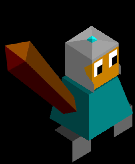
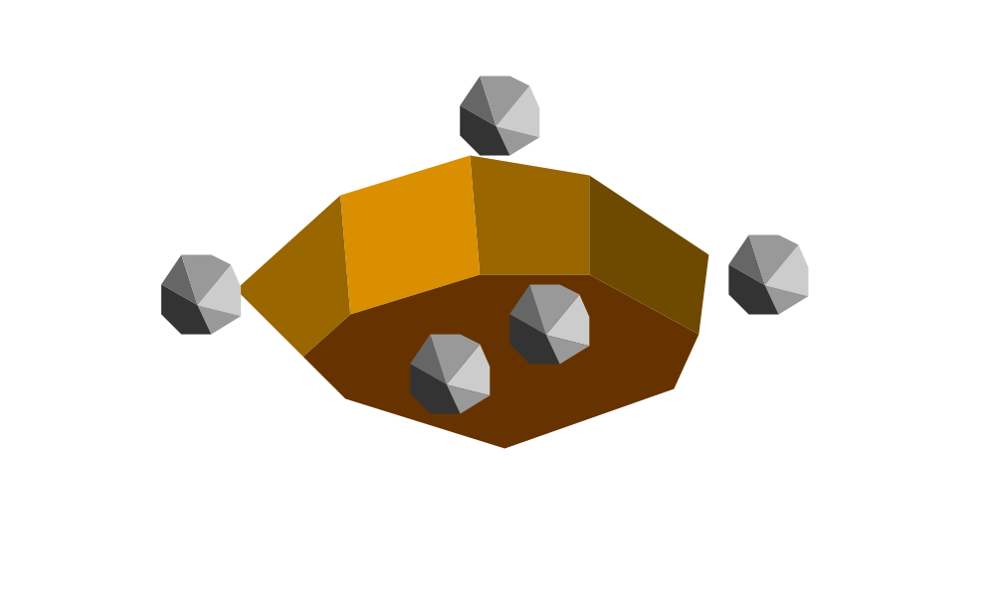

Crysjhem
Author: THomez#3628
The Crysjhem have lived in crystal and rocks for generations. They now harness these beautiful gems to their benefit. However, their beauty doesn’t go unoticed…
Techs
Farming -> Terramining - unlocks quarry which replaces farms
Buildings
Farm -> Quarry - produces one pop and 1 star
Mine - produces 3 pop
Forge -> Jewel Cast - produces 2 stars for every nearby mine or quarry
Windmill -> Crystal Tower - produces 1 pop for every nearby mine or quarry - makse the 8 tiles surrounding it have infinite movement point cost (like mountains)
Images

Their warrior

The quarry